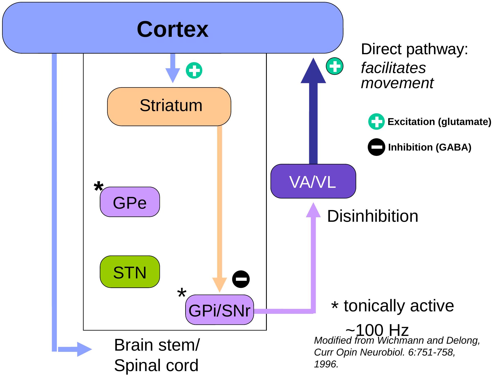
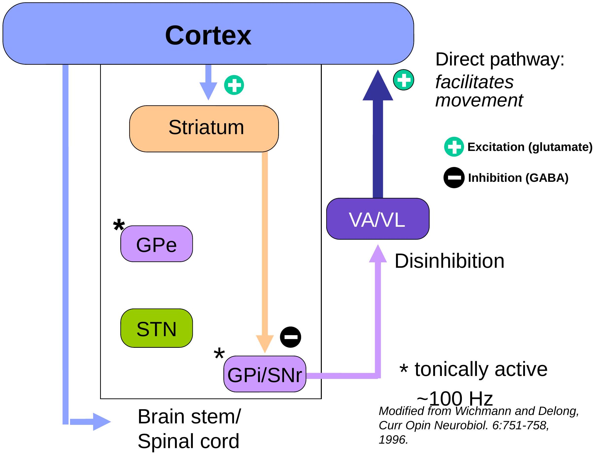
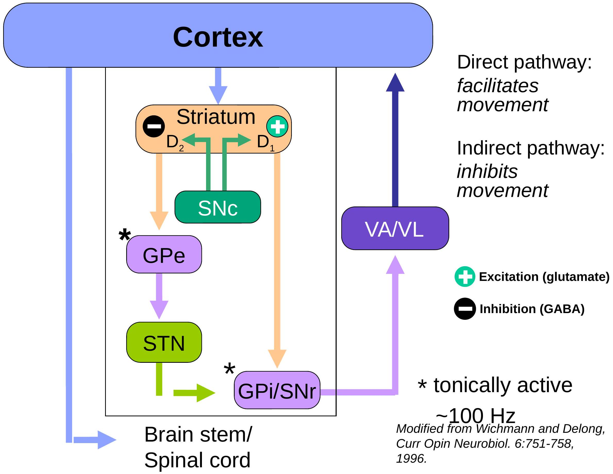
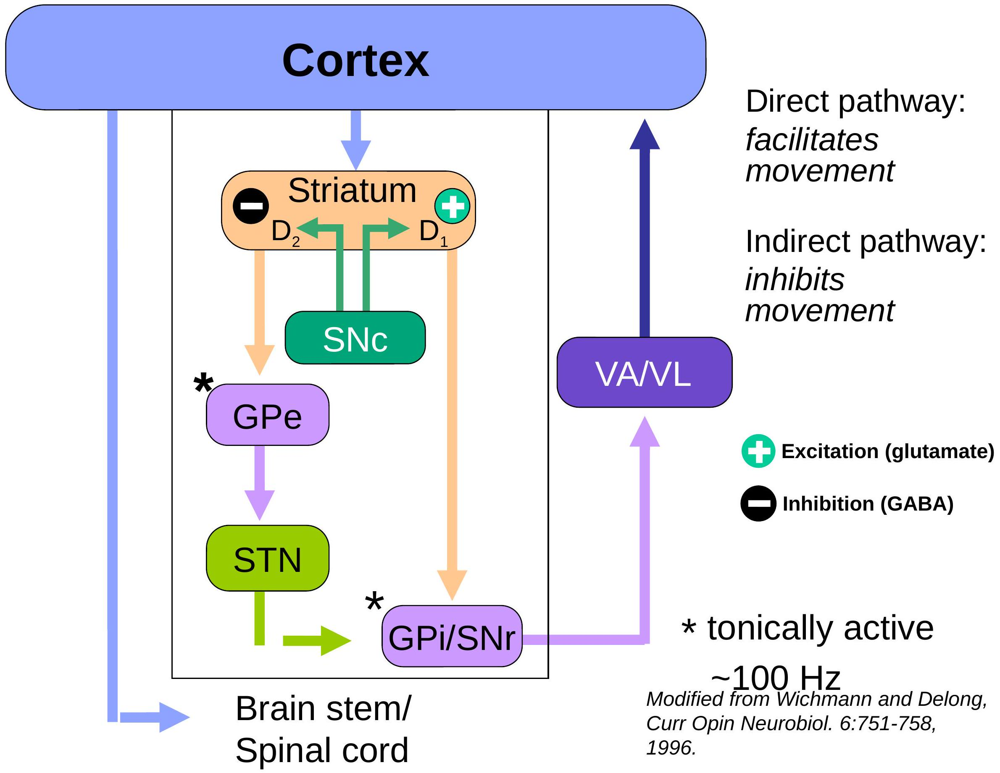
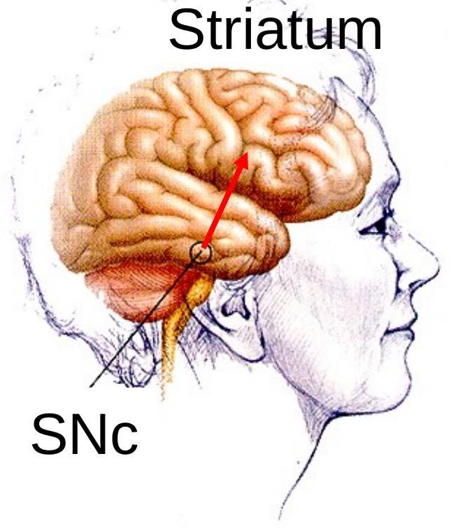

The Basal ganglia
Key objectives
- Components of the basal ganglia
- Functions of the basal ganglia
- Functional connections of the basal ganglia e.g., direct and indirect pathways, transmitters
- Common disorders of the basal ganglia and their anatomical basis
Neural structures involved in the control of movement
What is basal ganglia?
- A group of subcortical nuclei engaged primarily in motor control, AND
- motor learning
- Executive functions and behavior
- emotions.
What are the COMPONENTS of the basal ganglia?
Basal Ganglia
- Neostriatum
- Caudate nucleus
- Putamen
- Ventral striatum (nucleus accumbens)
- Paleostriatum
- Globus pallidus external segment (GPe)
- Globus pallidus internal segment (GPi)
- Substantia Nigra
- Pars compacta (SNc)
- Pars reticulata (SNr)
- Subthalamic nucleus (STN)

Anatomical nomenclature tips:
- caudate nucleus + putamen: striatum
- putamen + globus pallidus: lentiform nucleus
- can be recognized with the naked eye because SNC neurons contain neuromelanin in humans ${}^{\text {SNC }}$
- Pars compacta: SNC (cell-rich part): dopamine
- Pars reticulata: SNR (cells intermixed with fibers and sparse):
GABA
What are the functions of the basal ganglia?
Major functions
- Basal ganglia are involved in generation of goaldirected voluntary movements:
- Motor control
- Motor pattern selection
- Motor learning
- Executive functions and behavior
- Emotions.
Basal ganglia connections
Basal ganglia loops - motor and non-motor
 

 

Direct pathway
Release of DA in substantia nigra, as well as in striatum is required for control of movement by the basal ganglia
Motor behavior is determined by the balance between direct/indirect striatal outputs
Hypokinetic disorders
- insufficient direct pathway output
- excess indirect pathway output
Hyperkinetic disorders
- excess direct pathway output
- insufficient indirect pathway output
Parkinson's disease
Pathophysiology Primary: loss of nigrostriatal Dopamine projection
Human midbrain
Parkinson's Normal disease
Parkinson's disease
Symptoms
Motoric
- Tremor ( $\sim 4-5 \mathrm{~Hz}$, resting)
- Bradykinesia
- Rigidity
- Loss of postural reflexes
Depression
Dementia
Parkinson's disease Loss of postural reflexes
...even with mild tremor and bradykinesia
Parkinson's disease Rigidity
Hyperkinetic disorders: choreatic syndromes
Causes:
Huntington's chorea
- Dystonia
- Tardive dyskinesia
- DOPA-induced dyskinesia
Hemiballismus
Tourette's syndrome
Genetic (autosomal dominant)
Genetic or idiopathic
Chronic neuroleptic use
Parkinson's therapy
Unilateral stroke, typically subthalamic nucleus
Excessive D2-subtype DA receptor expression(?)
Choreatic symptoms
- Involuntary (unwanted) movements
- Chorea (dance-like). Lesion in putamen. Causes flicking movement of hand, face or any other body part
- Athetosis (changeable or writhing movements). Lesion in globus pallidus
- Hemiballismus- Flailing movements of entire limb. Lesion in subthalamic nucleus
Huntington's disease
Pathophysiology
- Atrophy of striatum
- Loss of striatal GABAergic neurons
- Neuropathological sequence
1sst: loss of striatal GABA/enkephalin/D2-R neurons (indirect pathway)
2nd: loss of striatal GABA/dynorphin/D1-R neurons (direct pathway) & cortical atrophy
Huntington's disease pathology
Huntington's disease
Choreatic gait
Symptoms
Early motor signs
- chorea (brief, involuntary movements)
- dystonia (abnormal postures)
Dystonic movements
In a nutshell
| Lower Motor Neuron | Upper Motor Neuron | Basal Ganglia |
|---|---|---|
| Paralysis | Paresis (weakness) | No paralysis |
| Muscle atrophy | No atrophy | No atrophy |
| Areflexia & atonia | Hyperreflexia, hypertonia, spasticity | Parkinson's: rigidity, resting tremor, bradykinesia Huntington's: chorea, hyperkinesia |
| Ipsi deficit in spinal cord | Contra deficit above decussation Ipsi deficit below decussation | Contra |
Thank you!
Thank you!